Calculation of Limit Lines
Limit lines are horizontal lines that display the maximum and minimum consumption limits on a graph.
The limits are computed based on the High Limit Value and Low Limit Value specified in the Parameter dialog box or according to either of the following formulas:
- Difference between min and max divided by 2 > 25% of average value
- Difference between min and max divided by 2 < 25% of average value
The calculation of limits is also based on the type of graph selected in the Parameter dialog box on the Configuration page.
The following examples provide detailed information on the calculation of limit lines.
Example 1:
You have selected the following values in the Parameter dialog box on the configuration page:
Name | Values | Description |
Default Graph Type | Line (Sum) | Applicable if you are executing Consumption and Consumption Landscape reports. For this example, select Line (Sum). |
Default Graph Type (Max Power) | Line | Applicable only if you are executing the Consumption and Max Power report. |
Display Summary Table in report |
| Displays the summary table that provides information on the minimum, maximum, and average consumption in the reports. |
Display the up and down arrow in Graph |
| Indicates a rise or fall in values on the graph using the up and down arrows. |
Default display limits type in Graph | Line | Line: Displays the limit lines as horizontal lines on the graph |
Limits adjustment for High variation series |
| Enter a numeric value (between 0 to 25) for Limits High Adjustment (in %) and Limits Low Adjustment (in %) |
Limits adjustment for Low variation series |
| Enter a numeric value (between 0 to 5) for Limits High Adjustment (in %) and Limits Low Adjustment (in %) |
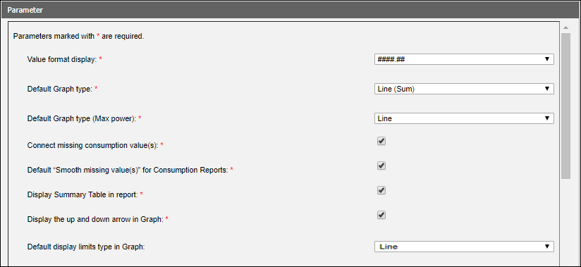
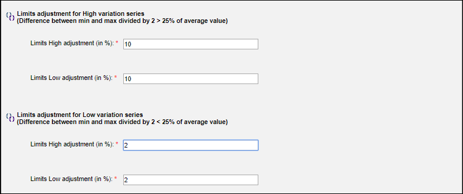
You execute a Consumption report by selecting an aggregator node (for example, Floor1) in the System Browser. In the Parameter dialog box, you select the Null Value option for High Limit Value and Low Limit Value fields. Retain the Default value in Display limits in Graph. You can change the value to Range if you want the limit lines to display as a range.
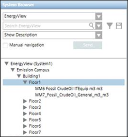
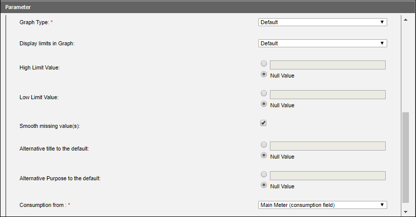
As we have selected Line (Sum) as the Default Graph type, a sum of the minimum, maximum, and average consumption values from the meters below the aggregator node display in the Summary table.
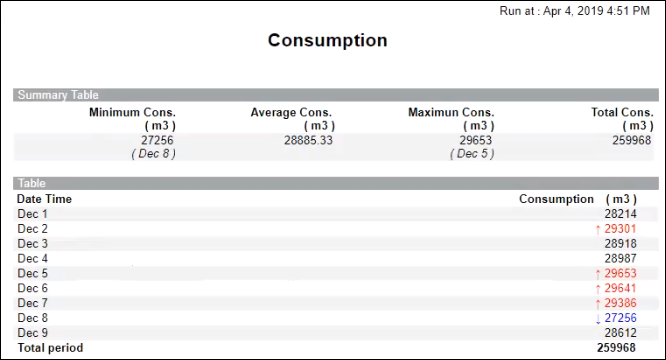
Consumption values that are above the maximum limit line are represented by a red arrow and values below the minimum limit line are represented by a blue arrow in the report table.
Let us understand how the limit lines are calculated and displayed on the graph
Maximum Consumption |
| 29653 |
Minimum Consumption |
| 27256 |
Average Consumption |
| 28885 |
Difference between minimum and maximum consumption (A) |
| 2397 |
A / 2 (B) | 2397 / 2 | 1198.5 |
Percentage B is of the Average Consumption | 1198.5 * 100 / 28885 | 4.14% |
As the percentage of the difference between the minimum and maximum consumption values is less than 25% of the average value, 2% will be added to the minimum consumption value and displayed as the minimum limit line (27801.12) and 2% will be deducted from the maximum consumption value and displayed as the maximum limit line (29059.94). This is because, we have specified 2% in the Limits High Adjustment and Limits Low Adjustment fields of the Parameter dialog box in the configuration page. The graph displaying the limit lines is as follows:
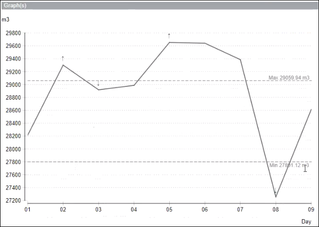
Example 2:
In this example, we execute a Consumption report and select Line (Compare) as the Default Graph Type in the Parameter dialog box. The other options are identical to Example 1.
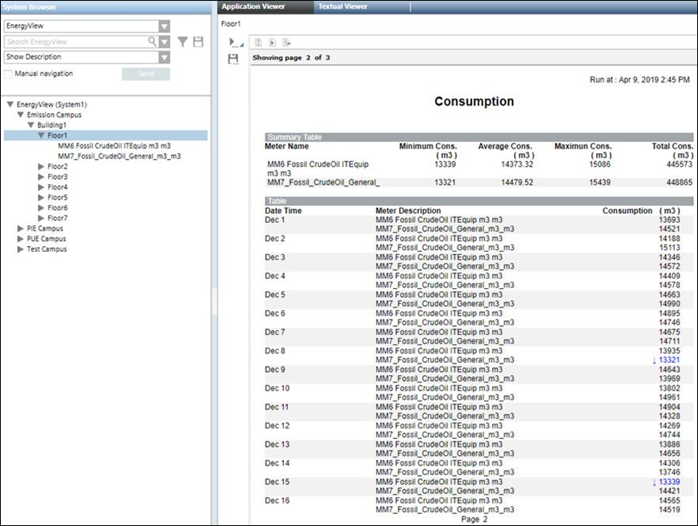
Assuming that we have selected the High Limit Value and Low Limit Value in the Parameter dialog box as Null Value, the calculation of high limit line and low limit line will be as follows:
Maximum Consumption | In case of Line (Compare), the maximum consumption values of the displayed meters is compared and the highest of the values is selected. In this example, the maximum consumption of the MM7 meter is taken as it is higher than the consumption of MM6. | 15439 |
Minimum Consumption | In case of Line (Compare), the minimum consumption values of the displayed meters is compared and the lowest of the values is selected. In this example, the minimum consumption of the MM7 meter is taken as it is lower than the consumption of MM6. | 13321 |
Average Consumption | The average consumption of any of the displayed meters can be taken. In this example, we have taken the average consumption of the MM6 meter. | 14373.32 |
Difference between minimum and maximum consumption (A) |
| 2118 |
A / 2 (B) | 2118 / 2 | 1059 |
Percentage B is of the Average Consumption | 1059 * 100 / 14373.32 | 7.37% |
As the percentage of the difference between the minimum and maximum consumption values is less than 25% of the average value, 2% will be added to the minimum consumption value and displayed as the minimum limit line (13587.42) and 2% will be deducted from the maximum consumption value and displayed as the maximum limit line (15130.22).
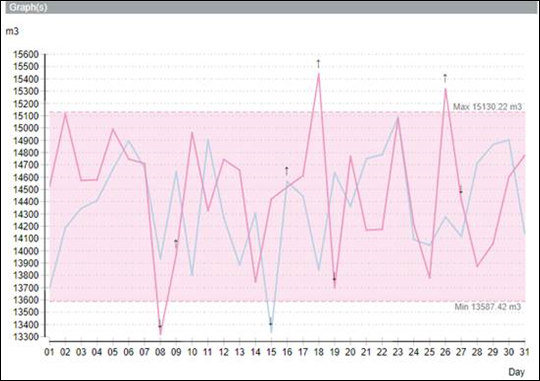

NOTE:
After calculating the high limit and low limit values for the limit lines, if the value of the higher limit computes to a value less than the lower limit, then these values will be swapped and displayed on the graph. For example, if the value of the high limit computes to 65536 and that of the low limit computes to 68536, then 65536 will be considered as the lower limit and 68536 will be considered as the high limit and displayed on the graph.
Example 3:
In this example, we execute a Consumption report and select Bar as the Default Graph Type in the Parameter dialog box. The other options remain identical to Example 1.
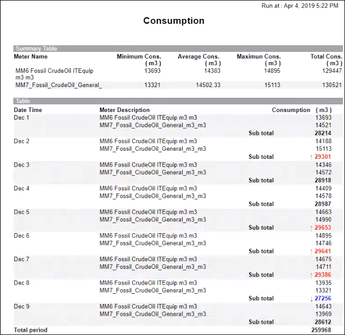
Assuming that we have selected the High Limit Value and Low Limit Value in the Parameter dialog box as Null Value, the calculation of high limit line and low limit line will be as follows:
Maximum Consumption | Sum of the maximum consumption of the meters below the aggregator node. | 29653 |
Minimum Consumption | Sum of the minimum consumption of the meters below the aggregator node. | 27256 |
Average Consumption | Average consumption value of any of the meters below the aggregator node. | 14383 |
Difference between minimum and maximum consumption (A) |
| 2397 |
A / 2 (B) | 2397 / 2 | 1198.5 |
Percentage B is of the Average Consumption | 1198.5 * 100 / 14383 | 8.33% |
As the percentage of the difference between the minimum and maximum consumption values is less than 25% of the average value, 2% will be added to the minimum consumption value and displayed as the minimum limit line (27801.12) and 2% will be deducted from the maximum consumption value and displayed as the maximum limit line (29059.94).
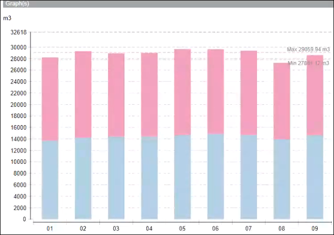
Example 4:
In this example, we execute the report by specifying the High Limit Value and Low Limit Value in the Parameter dialog box.
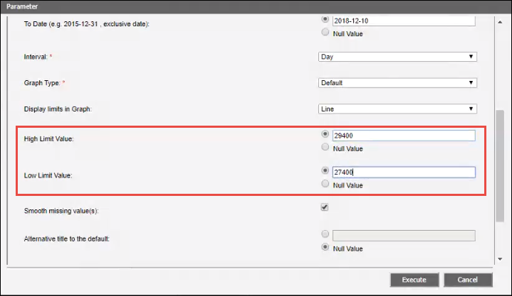
As the values for high limit and low limit are directly entered in the Parameter dialog box, the limit lines will directly be displayed on the graph on executing the report and not on the basis of the formulas as in Example 1.
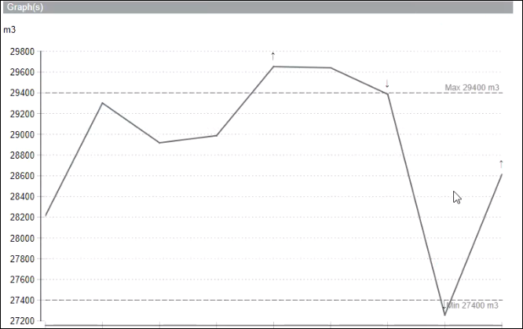